requests简介：对http协议实现的一个库
Http for humans：具有标准的Python风格的一个库
和urllib/urllib2的区别：
1）requests不是标准库
2）最后的http库，PythonIC风格
请求：
1.requests.request发送一个http请求
1）method：get/post/head/put/delete http的请求方法
2）url请求的目标地址
3）params:请求的参数，这个参数是一个字典
4）data：字典，字节流，或类文件句柄 要上传的数据，可以支持很多种数据格式
5）json：上传的json数据
6）headsers：自定义http头
7）cookies：发送额外的cookies，可以使用这个格式发送一个字典格式的cookies，但需要说明的是，这个request接口默认会处理这个cookies，也就是你第一次发送的请求，如果应答里面包含有cookie的话，这个时候你再发请求的话，它会自动把第一次应答的cookie再发回给服务器，所以，不需要向我们的urllib里面去处理它。
8）verify：是否检验证书，在Python里面，标准的做法是需要向证书检验，检查它是不是可信的机构发的，这个verify默认是true的，那对于一些自签名的证书，比如说我们的博客，那这个证书是自己给自己签名的，不是标准的公认的CA签名的，那这个时候可能我就不去检验这个证书了。
2.requests.get
1）url
2）和request的参数一样
3.requests.post
1）url
2）data
3）json
4）和request的参数一样
4.requests.head
5.requests.put
6.Requests.delete
只在for REST API里面比较常见
应答：
requests.Response
1）status_code状态码
2）headers应答的http头
3）json应答的json数据
4）text应答的unicode编码的文本
5）content应答的字节流数据
6）cookies应答的cookies，自动处理
示例：
# -*- coding: utf-8 -*-
import requests
def get_json():
r = requests.get('https://api.github.com/events')
print(r.status_code) //打印一个状态码
print(r.json()) //直接把这个应答打印成json数据
if __name__ == '__main__':
get_json()
运行结果，我们可以看到这个应答码是200，它的json就直接转化成了以下的数据。
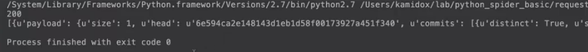
打印出不同格式的内容，代码如下：
# -*- coding: utf-8 -*-
import requests
def get_json():
r = requests.get('https://api.github.com/events')
print(r.status_code) //打印一个状态码
print(r.headers) //打印头
print(r.content) //打印出字节流
print(r.text)
print(r.json()) //直接把这个应答打印成json数据
if __name__ == '__main__':
get_json()
运行结果，状态还是200。
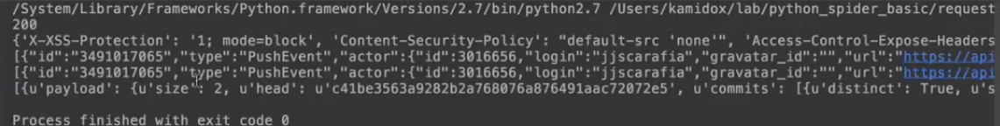
怎么去定制这个http请求的参数，代码如下：
# -*- coding: utf-8 -*-
import requests
def get_querystring():
url = ‘http://httpbin.org/get’ //返回的url
params = {'qs1': 'value1', 'qs2': 'value2'} //返回的参数
r = requests.get('url', params=params) //发送请求，把我们的请求参数带进去
print(r.status_code) //打印状态码
print(r.content)
if __name__ == '__main__':
get_querystring()
运行结果，应答码是200，args就是我们发送的参数，这个url就是我们真正请求的url。
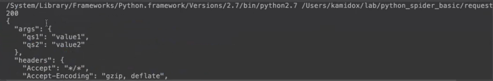
介绍一下，httpbin.org是一个专门用来测试http协议的一个网站。
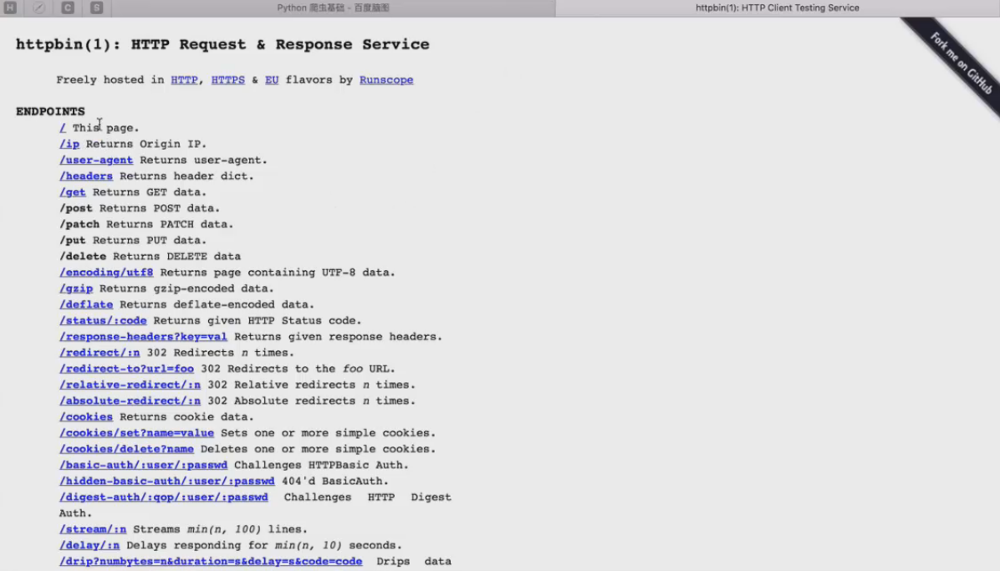
Ip就表示它会打开我们电脑的这个ip地址
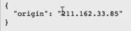
headers，我们的浏览器发送过去的http头
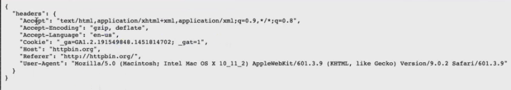
user_agent就表示它会打印出我电脑发送过去的user_agent
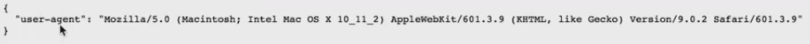
get，返回我们发送过去的请求，args是参数，heads是我们发过去的头，origin就是我们自己的电脑ip地址，url就是我发过去的url。
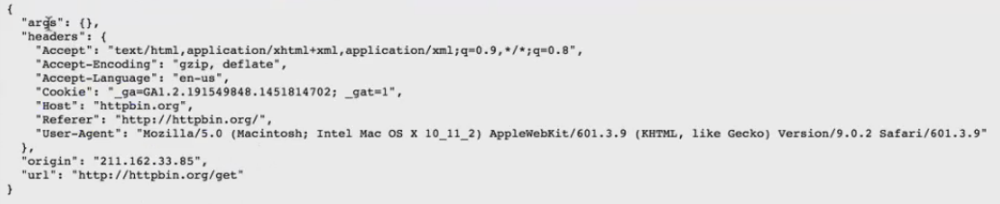
怎么定制http头，代码如下：
# -*- coding: utf-8 -*-
import requests
def get_querystring():
url = ‘http://httpbin.org/get’ //返回的url
params = {'qs1': 'value1', 'qs2': 'value2'} //返回的参数
r = requests.get('url', headers=headers) //用headers参数来定制http头
print(r.status_code) //打印状态码
print(r.content)
if __name__ == '__main__':
get_querystring()
运行结果，应答码还是200，这个请求里面我们没有带参数，所以，这里面的参数都是空的，这个头就是我们发过去的头
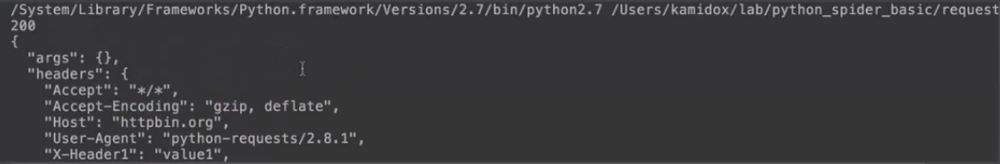
怎么处理cookies，代码如下：
# -*- coding: utf-8 -*-
import requests
ddef get_cookie():
headers = {'User-Agent': 'Chrome'}
url = 'http://www.douban.com'
r = requests.get(url, headers=headers)
print(r.status_code)
print(r.cookies)
if __name__ == '__main__':
get_cookie()
运行结果，这里面包含了两个cookie
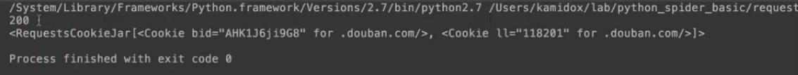
修改代码，获取bid的参数
# -*- coding: utf-8 -*-
import requests
ddef get_cookie():
headers = {'User-Agent': 'Chrome'}
url = 'http://www.douban.com'
r = requests.get(url, headers=headers)
print(r.status_code)
print(r.cookies[‘bid’])
if __name__ == '__main__':
get_cookie()
运行结果，这样就把bid的cookies打印出来了。
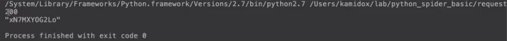
1）Session：同一个会话内参数保持一致，且会重用TCP连接以提高性能，也会尽量保持连接以提高性能。
2）SSL证书认证：开启，关闭，自定义CA证书
3）上传普通文件和复杂结构的文件
4）代理访问
1、阅读requests库的官方文档
1）了解基本用法
2）了解高级用法
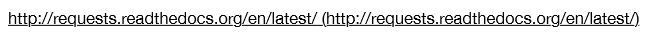
2、爬虫实例：豆瓣热播电影
1）用requests重新实现豆瓣热播电影
2）增加功能：下载每个电影的海报图片
热播电影数据格式
使用Chrome的开发者工具查看豆瓣热播电影的数据格式
使用requests重构代码
增加图片下载功能
3、豆瓣音乐
实现一个爬虫，获取新碟榜单曲
要求：
歌曲名称
歌手名字
豆瓣评分
解析单曲封面图片url并把图片下载下来
【本文由麦子学院独家原创，转载请注明出处并保留原文链接】